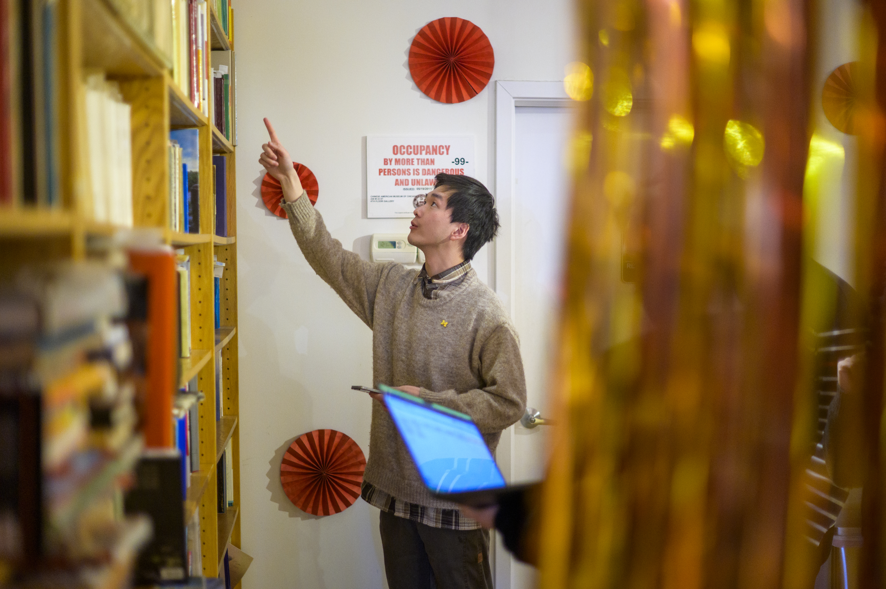

Close your project responsibly, evaluate your outcomes, and articulate your real-world experience for your future career.
Phase 4: Closing & Reflecting on the Experience
A project is not complete when the final deliverable is submitted. Closing the partnership responsibly and reflecting on what you learned help create lasting value for both your partner and your own professional development.
Close, Reflect, and Move Forward
The final stage of an engaged learning experience involves two important processes: ensuring your partner can continue to benefit from your work and translating what you learned into future academic and professional experiences.

Track A: Ending the Experience (Responsible Offboarding & Handoff)
Responsible offboarding is an ethical mandate in engaged learning. Delivering high-quality technical assets is only half the job—ensuring the community partner or client can independently maintain, update, and benefit from your work long after the semester ends is what defines a successful project.
What to Do
- Prepare for handoff: Organize code, design files, reports, documentation, and other deliverables in accessible and usable formats.
- Support the transition: Provide the information or documentation your partner needs to maintain, update, or continue the work.
- Close the partnership: Communicate final outcomes, clarify any remaining responsibilities, and formally conclude the working relationship.
- Evaluate the project: Compare final outcomes with the original project goals and gather feedback from your partner.
Questions to Consider
- Can our partner independently access and use what we created?
- Have we provided enough documentation for someone unfamiliar with the project?
- How do our final outcomes compare with the goals established at the beginning?
- What feedback does our partner have about the process and final deliverables?
- Are there any remaining responsibilities or expectations that need to be clarified?
Featured Resources & Handouts

Track B: After the Experience (Career Integration & Portfolios)
Employers do not just hire technical skills—they hire people who can solve unscripted problems, collaborate in diverse teams, and deliver results under realistic constraints. This track guides you in bridging the gap between your academic work and your professional brand, helping you articulate the full narrative of your growth.
What to Do
- Reflect on your growth: Consider what you learned about your technical skills, teamwork, problem-solving, and professional practice.
- Articulate your skills: Translate complex project experiences into clear accomplishments and examples for resumes and interviews.
- Build your portfolio: Document your process, key decisions, artifacts, challenges, and project outcomes.
- Maintain relationships: Consider how to appropriately stay connected with partners, mentors, and teammates after the project.
Questions to Consider
- What skills did I develop or strengthen through this experience?
- What challenges did I encounter, and how did I respond to them?
- What would I approach differently in a future project?
- What artifacts or outcomes could I include in my portfolio?
- How can I describe this experience clearly in a resume or interview?
- Which professional relationships would I like to maintain after the project?
Featured Resources & Handouts